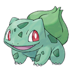
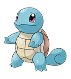

Welcome to the world of Pokémon! Pallet Town is the humble beginning of your
adventure. You will be welcomed by the famous Professor Oak and meet your
very first Pokémon. After an introduction, you'll head off into your journey
throughout the region of Kanto, in order to become the best Pokémon Trainer
ever! Let the adventure begin!
Humble beginning

You start in your bedroom. Withdraw the Potion from your computer just in
case your rival puts up a good fight. After exploring your house, step out
to explore town. Pallet Town is home to you and your mom, your rival and
his sister Daisy, and the Pokémon Research Laboratory.You may look inside
Professor Oak's Laboratory, but he's away at first. He seems to have left
town. In the moment that you set foot outside of town to search him,
someone calls to you and warns you not to go. It's him, Professor Oak!
After assembling together with your rival, Professor Oak offers you the
choice of three Pokémon from which you will take your very first.
Choosing your Starter Pokémon
Different players have different opinions regarding the choice. The
important part is that none of the options is a bad one or a worse one
than the other. Your choice determines the choice of your rival, who
chooses a contrasting Pokémon, as well as which Legendary Beast Pokémon is
released at the end of the game.
You may choose one of the three Pokémon based on your taste, as they were
designed precisely to cover different tastes that player's may have.
Charmander may be considered more appropriate for advanced players given
that it will struggle with the first two Gym leaders. However, all three
Pokémon are perfectly viable for the entire game, so you are free to
choose any one of them.


Bulbasaur is a dual-type Grass and Poison Pokémon, effective against a
variety of foes. It lacks an offensive movepool, and its STAB attacks
don't do much to common Poison-type Pokémon, but it has a great support
movepool, including Leech Seed and status-altering moves.
Charmander is a popular Fire-type Pokémon that shines on offense. It
learns powerful Fire attacks and other useful moves. However, its
defensive capabilities aren't as good as those of the other two
starters.
Squirtle is a Water-type Pokémon, tough on defense, but with attacks of
somewhat modest power. Its effective against Fire-type foes, as well as
Rock and Ground types. It can learn the HM Surf, powerful and invaluable
for going by waterways.
Meeting your obnoxious rival
With your first Pokémon in hand, you head for the exit, but your rival
decides that he wants to test his mettle against you and challenges you to
a duel which you cannot refuse. Your lifelong rival downplays you and
carries a grudge against you, but his sister Daisy is nice and thinks
you're OK. Stop by their home just North of the Laboratory and next to
yours when you later return to Pallet Town in order to obtain a map for
the region from her.
Daisy
Daisy plays an important role at the end of the game, as she will deal with
your Pokémon's Friendship level, used in some bonus evolution lines.